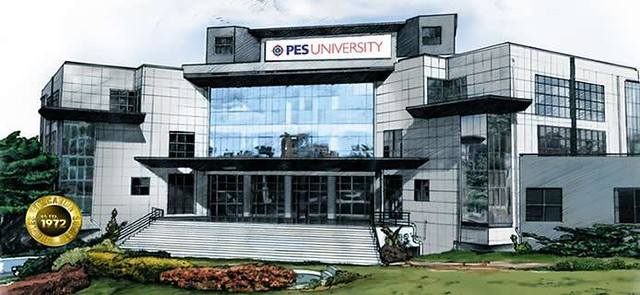
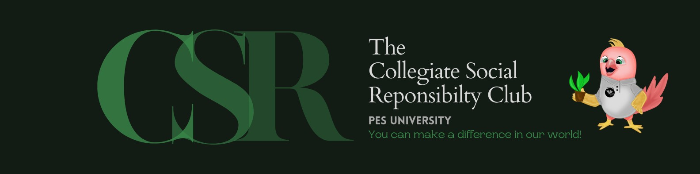
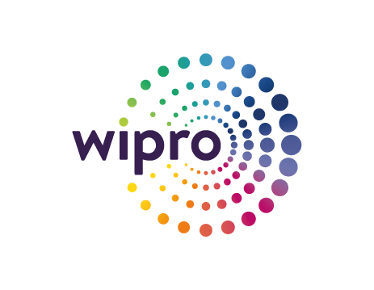

PES University
I completed my undergraduate studies, earning a Bachelor of Technology degree in Computer Science with a specialization in Data Science, from PES University, Bengaluru, India. Throughout my academic journey, PES University has been instrumental in providing me with the finest education tailored to my field of study. Alongside the core curriculum, I had the opportunity to explore various supplementary courses that enriched my learning experience. Beyond academics, I actively participated in the Collegiate Social Responsibility Club and was a member of the Centre of Innovation and Entrepreneurship group, among others. These extracurricular engagements allowed me to strike a balance between academic pursuits and community involvement, fostering personal growth and development. PES University's unwavering support has consistently ensured excellence in every aspect of my education and overall growth.
Specialization in Data Science
Courses
- UE17CS203 : Introduction to Data Science
- UE17CS208C : R Programming
- UE17CS252 : Database Management Systems
- UE17CS313: Big Data
- UE17CS322 : Data Analytics
- UE17CS345 : Digital Image Processing
Collegiate Social Responsibility Club(CSR)
During my extensive 2.5+ years with the Collegiate Social Responsibility Club, I served as a pivotal leader, overseeing a dedicated team of 70+ members in Bangalore, India, for impactful educational outreach in government schools. My responsibilities included meticulous planning, coordination, and hands-on teaching of basic subjects, coupled with the provision of essential supplies. Two notable events saw me leading the team, reinforcing my commitment to community service and showcasing effective leadership skills. These experiences have not only honed my organizational and interpersonal capabilities but also instilled a deep sense of responsibility, fostering my dedication to meaningful social causes.
Center for Innovation and Entrepreneurship(CIE)
I spearheaded a comprehensive project from inception to fruition, embodying the entrepreneurial spirit of CIE and harnessing the core values and capabilities of PES University. Through meticulous planning and execution, I developed an innovative startup concept, navigating through technical intricacies to deliver a compelling end product. Beyond technical expertise, I adeptly communicated the vision and impact of the venture to non-technical stakeholders, fostering understanding and garnering support. This journey epitomized the essence of CIE's mission, serving as a testament to our commitment to nurturing transformative ideas and empowering future entrepreneurs.
Industrial Visit - Wipro
During my industrial visit to Wipro IT Corporation in 2018, I gained invaluable insights into the company's operations and ethos. It was there that I was first introduced to the concept of blockchain technology and its multifaceted applications. Witnessing its practical implementations sparked my curiosity and instilled in me a deeper understanding of its evolving role in shaping various industries. This experience marked a pivotal moment in my journey, igniting a passion for exploring the innovative potential of blockchain technology.